МИНИСТЕРСТВО
СТРОИТЕЛЬСТВА ПРЕДПРИЯТИЙ
НЕФТЯНОЙ И ГАЗОВОЙ ПРОМЫШЛЕННОСТИ
ВСЕСОЮЗНЫЙ НАУЧНО ИССЛЕДОВАТЕЛЬСКИЙ ИНСТИТУТ
ПО СТРОИТЕЛЬСТВУ МАГИСТРАЛЬНЫХ ТРУБОПРОВОДОВ
СТРОИТЕЛЬСТВО
МАГИСТРАЛЬНЫХ
И ПРОМЫСЛОВЫХ ТРУБОПРОВОДОВ
Конструкции
и балластировка
ВСН 007-88
Миннефтегазстрой
Москва 1989
РАЗРАБОТАНЫ:
Всесоюзным научно-исследовательским институтом по строительству магистральных трубопроводов (ВНИИСТ) Миннефтегазстроя СССР
(кандидаты техн. наук И.Д. Красулин, В.В. Рождественский, В.Е. Поляков, А.Б. Айнбиндер, Н.П. Васильев, В.А. Щукаев, А.С. Гехман. Р.М. Хафизов, В.П. Черний, Е.И. Федоров; инженеры Х.К. Мухаметдинов, Г.Е. Емельянов, И.В. Бочкова, В.Ф. Дмитриева);
ЮжНИИгипрогазом Мингазпрома СССР
(инженеры В.С. Сумароков, Н.Н. Желудков);
ВНИИГАЗом Мингазпрома СССР
(д-р техн. наук З.Т. Галиуллин, канд. техн. наук И.А. Исмаилов, П.А. Дубин);
Гипротрубопроводом Миннефтепрома СССР
(инженеры Г.А. Вдовин, Б.А. Алимов);
ССО Запсибтрубопроводстроя
(инженеры С.П. Вельчев, И.Г. Дорошенко);
ВНИИПКтехоргнефтегазстроем Миннефтегазстроя СССР
(д-р тех. наук Б.Л. Кривошеин, канд. техн. наук П.А. Вислобицкий, B.Д. Фомичев; инженер Б.П. Пляцек - участие в разделах 3, 4, 5);
Уфимским нефтяным институтом
(д-р техн. наук Л.А. Бабин);
ВНИИОСП им. Н.М. Герсеванова Госстроя СССР
(кандидаты техн. наук Д.И. Федорович, Ю.О. Таргулян, М.Р. Гохман - участие в разделах 4, 5);
МИНГ им. И.М. Губкина
(д-р техн. наук П.П. Бородавкин - участие в разделах 4, 5);
ССО Центртрубопроводстроя Миннефтегазстроя СССР (инженеры С.М. Щербаков, В.Н. Сатаров, В.П. Бородавкин, М.Б. Ледянкин);
ССО Уралтрубопроводстроя Миннефтегазстроя СССР (инженер М.С. Богданов).
ВНЕСЕНЫ ВНИИСТом Миннефтегазстроя СССР
ПОДГОТОВЛЕНЫ К УТВЕРЖДЕНИЮ Главным научно-техническим управлением Миннефтегазстроя, главный технолог управления А.А. Файзулин
открытое акционерное общество «Газпром»
приказ
от «11» ноября 1998 г. № 140
О введении в действие ведомственных строительных норм «Конструкции и способы балластировки и закрепления подземных газопроводов»
В целях создания современной нормативной базы по балластировке и закреплению подземных газопроводов на проектных отметках оптимальными способами и повышения надежности газопроводов ОАО «Газпром»
приказываю:
1. Утвердить и ввести в действие с 1 декабря 1998 года ведомственные строительные нормы (ВСН) «Конструкции и способы балластировки и закрепления подземных газопроводов» (прилагается), согласованные с Госгортехнадзором России.
2. ООО «Инфомационно-рекламный центр газовой промышленности» (Н.Х. Халлыев), зарегистрировать в установленном порядке и обеспечить до 1 декабря 1998 года издание указанного нормативного документа в количестве 200 экземпляров и рассылку предприятиям и организациям Общества согласно перечню, представленному Управлением проектирования и экспертизы Департамента перспективного развития.
3. Принять к сведению, что с 1 декабря 1998 года ВСН 007-88 «Строительство магистральных и промысловых трубопроводов. Конструкции и балластировка» в системе предприятий ОАО «Газпром» не применяются.
4. Контроль за исполнением настоящего приказа возложить на начальника Управления проектирования и экспертизы Департамента перспективного развития В.И. Поддубского.
Председатель Правления ОАО «Газпром» Р.И. Вяхирев
|
институт по строительству и эксплуатации трубопроводов, объектов ТЭК АО «ВНИИСТ» 105187, Москва, Окружной проезд, 19 Телефон: 366-59-11,366-34-96, 366-54-97, Факс: 366-33-41, 230-61-71. Телетайп: 113997 ЖЮРИ E-mail: vniist@ipt.ru от ___ 21.02.2001 г. ___ № ___87___/ЦСМК на № 258 от 29.01.2001 г. |
Первому заместителю Генерального директора - главному инженеру ЗАО «ПИРС» Г-ну Гаврилову А.Н. |
О применении ВСН 007-88
«Магистральные и промысловые
трубопроводы. Конструкции
и балластировка».
В Приказе ОАО «Газпром» № 140 от 11.11.1998 г. указано:
п. 3 «Принять к сведению, что с 01.12.1998 г. ВСН 007-88 «Магистральные и промысловые трубопроводы. Конструкции и балластировка» в системе предприятий ОАО «Газпром» не применяется».
На балластировку нефтепроводов это не распространяется, поэтому при проектировании магистральных и промысловых нефтепроводов следует руководствоваться ВСН 007-88 с изменениями №№ 1 и 2.
С уважением,
Вице-президент И.Д. Красулин
С введением в действие «Строительство магистральных и промысловых трубопроводов. Конструкции и балластировка» ВСН 007-88/Миннефтегазстрой утрачивают силу:
ОСТ 102-99-85 «Утяжелители железобетонные для трубопроводов. Общие технические требования»
ОСТ 102-107-86 «Система показателей качества продукции. Строительство. Утяжелители железобетонные для магистральных трубопроводов. Номенклатура показателей»
РД 102-60-87 «Методические указания. Программа и методика приемочных испытаний опытных партий утяжелителей для балластировки трубопроводов»
«Инструкция по применению геотекстильных синтетических материалов (ГСМ) при балластировке грунтом стальных трубопроводов» ВСН 193-86/Миннефтегазстрой
«Инструкция по балластировке трубопроводов с использованием закрепленных грунтов» ВСН 180-85/Миннефтегазстрой
«Ведомственные строительные нормы по антикоррозионной защите свайных анкеров раскрывающегося типа АР-401, применяемых для закрепления магистральных нефтегазопроводов» ВСН 2-132-81/Миннефтегазстрой
«Инструкция по выбору и применению различных типов утяжеляющих грузов и анкерных устройств для закрепления магистральных трубопроводов против всплытия» ВСН 2-136-81/Миннефтегазстрой
«Инструкция по закреплению магистральных трубопроводов свайными анкерами раскрывающегося типа АР-401» ВСН 152-82/Миннефтегазстрой
«Применение групповой установки железобетонных утяжелителей типа УБО с использованием балластирующей способности грунта» ВСН 204-86/Миннефтегазстрой
СОГЛАСОВАНЫ Главным научно-техническим управлением Миннефтегазстроя СССР, начальник управления Н.И. Курбатов
Главным научно-техническим управлением Мингазпрома СССР, начальник управления А.Д. Седых
Главтранснефтью Миннефтепрома СССР, первый заместитель начальника В.Х. Галюк
Главгосгазнадзором СССР Мингазпрома СССР (письмо № 11-5-2/330 от 1.12.88 г.), заместитель начальника В.Д. Шмырев
|
Министерство строительства предприятий нефтяной и газовой промышленности |
Ведомственные строительные нормы |
ВСН 007-88 Миннефтегазстрой |
|
Строительство магистральных и промысловых трубопроводов. Конструкции и балластировка |
Вместо ОСТ 102-99-85, ОСТ 102-107-86, ВСН 204-86, ВСН 152-82, ВСН 180-85, ВСН 2-136-1, РД 102-60-87, ВСН 193-86, ВСН 2-132-81 |
1. ОБЩИЕ ПОЛОЖЕНИЯ
1.1. Настоящие ведомственные строительные нормы распространяются на проектирование и строительство магистральных и промысловых трубопроводов, прокладываемых на болотах, обводненной и заболоченной местности, на вечномерзлых грунтах.
1.2. Ведомственные строительные нормы разработаны в развитие глав СНиП 2.05.06-85 «Магистральные трубопроводы» и СНиП 41.42-80 «Магистральные трубопроводы. Правила производства и приемки работ». Данные нормы регламентируют вопросы балластировки и закрепления трубопроводов, куда входят:
способы и конструкции;
области применения способов и конструкций;
основные расчетные положения;
организация и технология производства работ;
контроль качества производства работ;
техника безопасности.
1.3. В проектах (рабочих проектах) на строительство трубопроводов для их балластировки и закрепления применяются способы и конструкции, выдержавшие приемочные испытания, стандартизированные в установленном порядке и отвечающие требованиям нормативных документов, регламентирующих их изготовление и применение.
|
Утверждены Миннефтегазстроем СССР от 18 ноября 1988 г. |
Срок введения
в действие |
1.4. Выбор конструкции балластирующего устройства (железобетонные утяжелители, анкерные устройства, минеральный грунт), а также метода закрепления трубопровода (одиночными устройствами или группами) производится проектной организацией, исходя из конкретных условий участков строительства, характеризуемых материалами инженерных изысканий, расчетных нагрузок, действующих на устройство, на основе результатов технико-экономического сравнения возможных вариантов проектных решений, выполненных с учетом требований по экономному расходованию строительных материалов и обеспечивающего наиболее полное использование прочностных и деформационных характеристик грунтов и физико-механических свойств материалов для закрепления трубопровода.
1.5. Технические решения по балластировке отражаются в проекте (рабочем проекте) строительства трубопроводов.
1.6 Балластируемые участки трубопроводов с температурой транспортируемого продукта более 40 °С должны быть выполнены из труб с изоляционным покрытием из двух или трехслойного экструдированного полиэтилена заводского изготовления.
(Введен дополнительно, Изм. № 2).
2. КОНСТРУКЦИИ И СПОСОБЫ БАЛЛАСТИРОВКИ И ЗАКРЕПЛЕНИЯ ТРУБОПРОВОДОВ
2.1. В зависимости от конкретных условий участка трассы трубопровода, характеристик грунтов, уровня грунтовых вод и схемы прокладки трубопровода применяются следующие конструкции и способы балластировки и закрепления трубопроводов:
железобетонные утяжелители охватывающего типа УБО и клиновидные типа 1-УБКм;
анкерные устройства винтового, раскрывающего типов (ВАУ, АР), а также вмораживаемые;
минеральный грунт, в том числе с применением рулонных нетканых синтетических материалов (НСМ);
полимерно-контейнерные балластирующие устройства (ПКБУ);
групповой способ установки железобетонных утяжелителей и анкерных устройств;
повышенное заглубление трубопровода.
Утяжелители текстильные контейнерного типа, заполняемые грунтом или другими сыпучими материалами с плотностью частиц грунта (сыпучего материала) не менее 2,6 г/см3.
(Измененная редакция, Изм. № 1).
2.2. железобетонные утяжелители охватывающего типа УБО изготавливаются по ТУ 102-300-81.
Рабочие чертежи на изделие и опалубку разработаны ЭКБ по железобетону (проект № 999 Б на изделие для трубопроводов диаметром от 530 до 1420 мм, проект № 10186 на опалубку для трубопроводов диаметром от 720 до 1220 мм).
Утяжелители типа УБО (рис. 1, а) состоят из двух железобетонных блоков, двух металлических, защищенных изоляционным покрытием или мягких, изготовленных из долговечного синтетического материала, соединительных поясов.
а)
б)
Рис. 1. Схемы конструкций железобетонных утяжелителей:
а - утяжелитель типа УБО; б - утяжелитель типа 1-УБКм
Техническая характеристика утяжелителя типа УБО приведена в табл. 1.
|
Марка утяжелителя |
Габаритные размеры блока, мм |
Объем бетона, м3 |
Масса утяжелителя, кг |
||||||
|
H |
a |
B |
L |
h |
b |
||||
|
1420 |
УБО-1420-12 |
1600 |
600 |
600 |
1200 |
800 |
150 |
1,88 |
4324 |
|
1220 |
УБО-1220-13,5 |
1400 |
550 |
600 |
1350 |
700 |
150 |
1,84 |
4232 |
|
1020 |
УБО-1020-15 |
1100 |
450 |
550 |
1500 |
600 |
150 |
1,46 |
3358 |
|
820 |
УБО-1020-15 |
1100 |
350 |
550 |
1500 |
600 |
150 |
1,46 |
3358 |
|
720 |
УБО-1020-15 |
1100 |
300 |
550 |
1500 |
600 |
150 |
1,46 |
3358 |
|
530 |
УБО-530-10 |
700 |
230 |
300 |
1000 |
300 |
100 |
0,36 |
828 |
Примечание. Масса утяжелителя определена для плотности бетона, равной 2300 кг/м3.
2.3. Железобетонные утяжелители клиновидного типа 1-УБКм изготавливаются по ТУ 102-421-86. Рабочие чертежи на изделие и опалубку разработаны ЭКБ по железобетону (проект № 10418 на изделие, проекты №№ 10313, 10336, 10326, 10324 на опалубку для трубопроводов диаметром соответственно 1420, 1220, 1020 и 820 мм).
Утяжелитель представляет собой седловидный железобетонный блок (рис. 1, б), поверхность которого, примыкающая к трубопроводу, образована двумя взаимно пересекающимися цилиндрическими поверхностями с радиусом больше, чем радиус трубы.
Техническая характеристика утяжелителя типа УБК приведена в табл. 2.
|
Марка утяжелителя |
Габаритные размеры утяжелителя, мм |
Объем бетона, м3 |
Масса утяжелителя, кг |
|||||
|
L |
H |
B |
R |
b |
||||
|
1420 |
1-УБКм-1420-10 |
1000 |
1760 |
2400 |
1100 |
400 |
2,51 |
6020 |
|
1220 |
1-УБКм-1220-9 |
900 |
1570 |
2000 |
1100 |
290 |
1,69 |
4060 |
|
1020 |
1-УБКМ-1020-9 |
900 |
1370 |
1340 |
1100 |
300 |
1,49 |
3580 |
|
620 |
1-УБКМ-820-9 |
900 |
1120 |
1600 |
1000 |
300 |
1,12 |
2690 |
|
720 |
1-УЬКм-720-9 |
900 |
1030 |
1500 |
800 |
310 |
1.03 |
2470 |
|
630 |
1-УБКМ-720-9 |
900 |
1030 |
1500 |
800 |
310 |
1,03 |
2470 |
|
530 |
1-УБКм-529-9 |
900 |
760 |
1300 |
800 |
310 |
0,69 |
1660 |
|
478 |
1-УБКм-529-9 |
900 |
760 |
1300 |
800 |
310 |
0,69 |
1660 |
|
426 |
1-УБКм-426-9 |
900 |
690 |
1100 |
800 |
250 |
0,55 |
1320 |
|
377 |
1-УБКм-426-9 |
900 |
690 |
1100 |
800 |
250 |
0,55 |
1320 |
Примечание. Масса утяжелителя определена для плотности бетона 2400 кг/м3.
2.4. Полимерно-контейнерное балластирующее устройство (ПКБУ) (рис. 2) изготавливают по ТУ 6-19-210-32 и рабочим чертежам ВНИИСТа. Оно представляет собой навесное устройство из технической ткани с металлическими распорными рамками. Применяемые технические ткани должны соответствовать техническим условиям предприятия-изготовителя, иметь заключение ВНИИСТа и ВНИИГаза о долговечности в грунтовых условиях и согласование Заказчика.
(Новая редакция, Изм. № 2).
Рис. 2. Схема конструкции полимерно-контейнерного балластирующего устройства:
1 - рамка жесткости; 2 - емкость из мягкой ткани; 3 - нижняя грузовая лента; 4 - верхняя грузовая лента; 5 - противоразмывная перегородка
2.5. Для увеличения производительности труда и учета в балластировке массы грунта засыпки траншеи железобетонные утяжелители и ПКБУ устанавливают групповым способом.
2.6. Балластировка трубопроводов грунтом производится путем увеличения глубины траншеи. В зависимости от характеристик грунтов обратной засыпки и диаметра трубопровода достигается частичная или полная величина нормативной интенсивности балластировки.
2.7. Балластировка трубопроводов грунтом с применением нетканого синтетического материала (НСМ) выполняется по схемам рис. 3. В зависимости от характеристик грунта балластировка осуществляется по всей длине трубопровода или отдельными участками.
Применяемые ПСМ должны соответствовать техническим условиям предприятия-изготовителя, иметь заключение ВНИИСТа и ВНИИГаза о долговечности в грунтовых условиях и согласование Заказчика.
(Измененная редакция, Изм. № 2).
Рис. 3. Схемы балластировки трубопроводов грунтом с применением НСМ:
а - для песчаных; б - для глинистых; 1 - минеральный грунт; 2 - полотно из НСМ; 3 - трубопровод.
2.8. В качестве балластирующего устройства может применяться грунт, закрепленный добавками вяжущих компонентов по ТУ 38-101960-83 (тяжелые крекинг остатки, битумы и т.д.). Балластировка трубопроводов закрепленным грунтом выполняется в виде перемычек совместно с железобетонными утяжелителями или анкерными устройствами (рис. 4).
Рис. 4. Схема конструкций балластных перемычек:
а - балластная перемычка из закрепленного грунта; б - комбинированный способ балластировки;
1 - рекультивируемый слой грунта; 2 - закрепленный грунт; 3 - минеральный грунт; 4 - трубопровод; 5 - утяжелители типа УБО
2.9. Винтовые анкерные устройства типа ВАУ-1 (рис. 5) изготавливают по ТУ 102-164-80 и рабочим чертежам ВНИИСТа. ВАУ-1 состоит из двух винтовых анкеров, двух анкерных тяг и силового пояса.
Рис. 5. Схема конструкции винтового анкерного устройства типа ВАУ:
1 - тяга анкерная; 2 - винт анкера; 3 - силовой пояс; 4 -трубопровод; 5 - прокладка
Свайные анкерные устройства раскрывающегося типа АР-401 и АР-401В изготавливаются по ТУ 102-318-82 и рабочим чертежам Тюменского филиала СКБ «Газстроймашина». Анкерные устройства типа АР состоят из двух свайных анкеров и силового пояса (рис. 6). Свайный анкер состоит из тяги, выполненной из трубы диаметром 168 мм или металлической полосы, к которой шарнирно крепятся лопасти, расположенные попарно в два яруса.
Рис. 6. Схема конструкции раскрывающегося анкерного устройства типа АР-401:
1 - анкер раскрывающийся; 2 - прокладка; 3 - хомут; 4 - мат; 5 - трубопровод
2.10. Вмораживаемые анкерные устройства дискового и стержневого типов изготавливаются по ТУ 102-455-88 и рабочим чертежам ВНИИСТа, ССО Центртрубопроводстрой.
Анкерное устройство дискового типа (рис. 7) состоит из двух тяг с круглыми дисками, расположенными на определенном расстоянии друг от друга, двух ограничителей усилий и силового пояса.
Рис. 7. Схема конструкции вмораживаемого анкерного устройства дискового типа:
1 - ограничитель усилий; 2 - тяга; 3 - металлические диски; 4 - грунтовый раствор
Анкерное устройство стержневого типа (рис. 8) отличается от предыдущего тем, что в нем отсутствуют диски, а тяги выполнены из арматуры периодического профиля. Ограничители усилий в анкерном устройстве применяются в случае закрепления трубопроводов, прокладываемых в пучинистых грунтах.
Рис. 8. Схема конструкции стержневого анкерного устройства:
1 - стержневой анкер; 2 - компенсатор; 3 - тяга, 4 - силовой пояс; 5 - футеровочный мат.
2.11. Утяжелители текстильные контейнерного типа изготавливаются из полимерных материалов, в соответствии с утвержденными ТУ и регламентом изготовления. Утяжелители представляют собой замкнутые оболочные конструкции, соединяемые собой неразъемно при изготовлении или с помощью отдельных конструкций (силовых поясов и др.) при монтаже их на трубопровод, уложенный в траншею.
(Введен дополнительно, Изм. № 1).
3. ОБЛАСТИ ПРИМЕНЕНИЯ КОНСТРУКЦИЙ И СПОСОБОВ БАЛЛАСТИРОВКИ И ЗАКРЕПЛЕНИЯ ТРУБОПРОВОДОВ
3.1. Применяемые конструкции и способы балластировки и закрепления трубопроводов определяются проектной организацией и отражаются в проекте (рабочем проекте), исходя из следующих основных факторов:
характера и типа грунтов (их прочностных и деформационных характеристик);
глубины траншеи;
уровня грунтовых вод;
глубины и типа болот (при прокладке по болотистой или периодически затопляемой местности);
условий рельефа местности;
схемы прокладки (углы поворота в плане, вертикальные кривые и т.п.);
методов и сезона производства строительно-монтажных работ;
экономической целесообразности.
3.2. Балластировку трубопроводов железобетонными утяжелителями типа УБО по ТУ 102-300-81 (с изменениями №№ 1 - 12) и типа УБК по ТУ 102-421-86 (с изменениями №№ 1 - 5) можно производить на болотах, обводненных участках, поймах рек, вечномерзлых грунтах, за исключением участков трубопроводов, получающих в процессе эксплуатации продольные перемещения более 40 мм, а при применении мягких соединительных поясов - более 50 мм.
В сильноагрессивных грунтах (по табл. 4 - 7 СНиП 2.03.11-85) утяжелители типа УБО и УБК могут использоваться по специальным ТУ, учитывающим повышенные требования к бетону в зависимости от вида и степени засоленности грунтов, а также необходимость вторичной защиты - нанесения покрытий по бетону и металлическим элементам в соответствии со СНиП 2.03.11-85.
3.3. Закрепление трубопроводов на проектных отметках анкерными устройствами типа ВАУ допускается на участках трубопроводов, прокладываемых в минеральных грунтах, имеющих тенденцию к восстановлению прочностных свойств после разрушения из естественного состояния; при условии отсутствия воды в траншее в период производства работ, кроме участков, получающих в процессе эксплуатации продольные перемещения величиной более 40 мм. Глубину траншеи для трубопровода на участках закрепления анкерами ВАУ следует увеличить на 0,5 м по отношению к величинам заглублений трубопровода, указанным в п. 5.1. СНиП 2.05.06-85.
3.3, 3.4. (Новая редакция, Изм. № 2).
3.4. Анкеры раскрывающегося типа АР-401 и АР-401В можно применять для закрепления трубопроводов, прокладываемых на болотах и обводняемых территориях, при этом верхние лопасти анкеров после их раскрытия должны находиться в минеральном грунте на глубине, но менее 3 м.
3.6. Железобетонные утяжелители и анкерные устройства применяются для балластировки и закрепления подводных переходов шириной 50 м и менее и проектируемых с учетом продольной жесткости труб. При этом утяжелители или анкерные устройства устанавливаются на неразмываемых береговых участках.
3.7. Полимерно-контейнерные балластирующие устройства применяются для балластировки трубопроводов, прокладываемых на обводненных и с прогнозируемым обводнением участках трассы. При заполнении контейнеров привозным минеральным грунтом эти устройства допускается применять и на болотах глубиной не более глубины траншеи.
3.8. Балластировку трубопроводов закрепленными грунтами можно производить на участках обводненной и с прогнозируемым обводнением территории при условии отсутствия воды в траншее в процессе производства работ (производство работ в зимнее время, удаление воды техническими средствами и т.д.).
3.9. Балластировку трубопроводов грунтом с применением нетканых синтетических материалов (НСМ) можно производить на участках с прогнозируемым обводнением, на обводненных и заболоченных участках трассы, на вечномерзлых грунтах при условии отсутствия воды в траншее в процессе производства работ (производство работ в зимнее время, удаление воды техническими средствами и т.д.).
При балластировке трубопроводов на уклонах более 3° следует предусматривать дополнительные мероприятия против размыва грунта обратной засыпки траншеи (перегородки, установка железобетонных утяжелителей типа 1-УБКм и т.д.).
Балластировку грунтом с применением НСМ по схеме рис. 3, а производят при прокладке трубопроводов в песчаных грунтах, по схеме рис. 3, б - в глинистых, при этом ширина траншеи должна соответствовать требованиям СНиП III.42-80, раздел 3, а минимальное заглубление трубопровода в грунт при его балластировке грунтом с ПСМ следует увеличивать на 0,5 м по отношению к величинам заглублений трубопровода, указанным в п. 5.1 СНиП 2.05.06-85.
3.10. Закрепление трубопроводов вмораживаемыми анкерными устройствами производят в твердомерзлых песчаных и глинистых грунтах, включая болота с мощностью торфяного покрова не более глубины траншеи при условии, что несущие элементы вмораживаемых анкеров должны находиться в вечномерзлом грунте в течение всего срока их эксплуатации.
К твердомерзлым относятся песчаные и глинистые грунты, если их температура ниже значений, равных:
для песков крупных и средней крупности минус 0,1 °С
для песков мелких и пылеватых минус 0,3 °С
для супесей минус 0,6 °С
для суглинков минус 1,0 °С
для глин минус 1,5 °С
Длина части анкера, взаимодействующая с вечномерзлым грунтом в процессе эксплуатации трубопровода, должна быть не менее 2 м (СНиП 2.02.04-87). Конструкция ограничителя усилий обеспечивает работоспособность анкера:
на участках болот в течение всего периода эксплуатации трубопровода;
на участках минеральных грунтов в течение периода времени, необходимого для полной стабилизации свойств грунтов обратной засыпки (3 - 7 лет).
Средняя расчетная температура грунта по длине вмороженной части анкера, при которой возможна установка вмораживаемых буроопускных анкеров, должна быть не выше минус 0,5 °C для песчаных грунтов и минус 1,0 °С для глинистых грунтов.
Применение вмораживаемых анкеров не допускается на участках трубопроводов, получающих в процессе эксплуатации продольные перемещения величиной более 40 мм.
3.9, 3.10. (Измененная редакция, Изм. № 2).
3.11. Балластировку утяжелителями контейнерного типа можно производить на всех участках подземных трубопроводов (за исключением подводных переходов). Ограничения на применение контейнерных утяжелителей указываются в ТУ.
(Введен дополнительно, Изм. № 1).
4. ОСНОВНЫЕ РАСЧЕТНЫЕ ПОЛОЖЕНИЯ
4.1. Балластировка трубопровода и его закрепление при подземной прокладке производится с целью обеспечения проектного положения трубопровода в процессе строительства и надежной его работы в процессе эксплуатации.
Проверка устойчивости положения трубопровода (против всплытия), прочности, общей устойчивости в продольном направлении и деформативности производится в соответствии с действующими нормами на проектирование магистральных и промысловых трубопроводов.
4.2. Расчет устойчивости положения против всплытия трубопровода производится с использованием расчетных характеристик конструкций балластировки без учета их податливости и должен отражать условия строительства, испытания и эксплуатации трубопровода.
Расчет прочности, общей устойчивости в продольном направлении и деформативности трубопровода в процессе испытания и эксплуатации выполняется с учетом податливости конструкций балластировки с использованием их предельных расчетных характеристик. Расчетные схемы и методы расчета трубопроводов необходимо выбирать с учетом возможности использования ЭВМ.
4.3. С целью выбора рациональной расстановки утяжелителей и анкеров следует использовать оптимизационные методы расчета.
4.4. Используемые для расчета физико-механические и теплотехнические характеристики грунта должны определяться на основании изысканий и с учетом прогнозирования изменения их свойств в процессе строительства и эксплуатации.
Нагрузка от выталкивающей силы воды
4.5. Выталкивающая сила воды, приходящаяся на единицу длины трубопровода, определяется по формуле
где
Fобв = 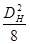
gв - плотность воды с учетом растворенных в ней солей.
На обводненных участках трубопроводов, сложенных грунтами, которые могут перейти в текучепластическое состояние, при определении выталкивающей силы воды вместо плотности воды gв следует принимать плотность разжиженного грунта, определяемую по данным изысканий;
q - ускорение свободного падения (q = 9,81 м/с2);
DH - наружный диаметр трубы с учетом изоляционного покрытия и футеровки;
hB - расстояние от верха засыпки до расчетного уровня воды;
h, h0, H - соответственно расстояния от верха засыпки до верхней образующей, оси и нижней образующей трубы (см. рис. 3, 4).
Определение характеристик винтовых и раскрывающихся анкеров
4.6. Расчетная несущая способность анкера Fd определяется на основании испытаний статической нагрузкой или расчетным путем на основании данных изысканий по формулам:
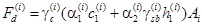
где n - число лопастей по высоте анкера;
n = 1 - для винтовых анкеров;
n = 2 - для раскрывающихся;
i - номер лопасти;
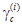
|
Наименование грунта |
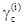 |
|
|
01 |
Пески маловлажные и супеси твердые |
0,7 |
|
02 |
Пески влажные и супеси пластичные |
0,6 |
|
03 |
Пески водонасыщенные и супеси текучие |
0,5 |
|
11 |
Глины и суглинки твердые, полутвердые, тугопластичные и мягкопластичные |
0,7 |
|
12 |
Глины и суглинки текучепластичные |
0,6 |
Примечание. Коэффициент определяется грунтом, залегающим над соответствующей лопастью.
С - расчетное значение удельного сцепления пылевато-глинистого или параметр линейности песчаного грунта в рабочей зоне (слое грунта выше лопасти толщиной, равной диаметру анкера);
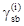
= 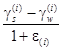
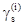
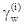
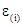
h - глубина заложения лопасти от дна траншеи;
Ai - площадь лопасти;
a, a - безразмерные коэффициенты, принимаемые по табл. 5, в зависимости от расчетного угла внутреннего трения грунта в рабочей зоне.
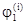
|
Коэффициенты |
, град |
Коэффициенты |
|||
|
a |
a |
a |
a |
||
|
13 |
7,8 |
2,8 |
24 |
18,0 |
9,2 |
|
15 |
8,4 |
3,3 |
26 |
23,1 |
12,3 |
|
16 |
9,4 |
3,8 |
28 |
29,5 |
16,5 |
|
18 |
10,1 |
4,5 |
30 |
38,0 |
22,5 |
|
20 |
12,1 |
5,5 |
32 |
48,4 |
31,0 |
|
22 |
15,0 |
7,0 |
34 |
64,9 |
44,4 |
Примечание. При
промежуточных значениях 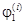
4.7. Расчетная несущая способность анкерного устройства определяется по формуле:
где z - количество анкеров в одном анкерном устройстве;
m - коэффициент
условия работы лопасти анкерного устройства, принимаемый равным 1 для с z
= 1 или при z = 2 и DH/a 3; а при z
3; а при z  2 и 1
2 и 1  DH/α
DH/α  3, то m = 0,25(1 + DH/d);
3, то m = 0,25(1 + DH/d);
DH - наружный диаметр трубы;
d - максимальный линейный размер проема лопасти анкера на горизонтальную плоскость;
- коэффициент надежности анкера, принимаемый равным 1,2, если несущая способность анкера Fd определена на основании испытаний, и 1,4, если это значение определено по формуле (4). Для вмораживаемых анкеров величину временно до 31.12.90 г. принимать равной 1,25.
Примечание. При расчете удерживающей способности анкеров АР-401 принимается положение нижней лопасти анкера в плане согласно рис. 6.
4.8. Расчет трубопроводов, закрепленных анкерами, погружаемыми в талые грунты, на прочность, продольную устойчивость и деформативность производится с учетом податливости (наличия перемещений под нагрузкой) анкеров в грунте.
Зависимость удерживающей способности анкерного устройства от его перемещения (диаграмма работы анкерного устройства) принимается в виде билинейной диаграммы (рис. 9) с восходящей прямой под углом a, предельной удерживающей способностью Bu и нисходящей прямой под углом b.
Рис. 9. Зависимость удерживающей способности анкерного устройства от перемещения его вверх
Параметры диаграммы вычисляются по формулам:
где 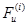
tg a = Ca
= z 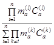
где 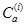 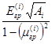
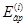
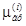
двухлопастного
tg
b = Cp = 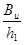
где h1 - расстояние от дна траншеи до ближайшей лопасти.
Удерживающая способность грунта
4.9. Расчетная удерживающая способность грунта засыпки, обладающего устойчивостью при обводнении и перемещении трубы, в том числе, закрепленного нефтяным вяжущим или другим способом, определяется по формулам:
при hb  h
h
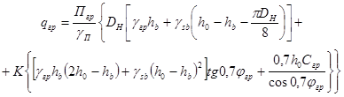
при
h < hb  h0:
h0:
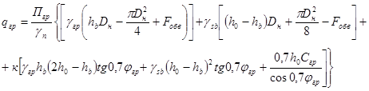
при hb > h0
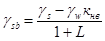
где к - безразмерный коэффициент, характеризующий призму выпора, принимаемый равным единице для трубопроводов с условным диаметром от 1 м и более; для трубопроводов с условным диаметром менее 1 м он принимается равным численному значению диаметра в м;
кнв - коэффициент надежности устойчивости положения трубопровода против всплытия;
Пгр - коэффициент надежности по нагрузке (грунту), принимаемый равным 0,8;
gп - коэффициент надежности по назначению, принимаемый равным 1,2;
gгр - удельный вес грунта засыпки;
gs - удельный вес частиц грунта засыпки;
jгр - угол внутреннего трения грунта засыпки;
Сгр - сцепление грунта засыпки;
l - коэффициент пористости.
(Характеристики грунта определится c учетом его разрыхления и обводнения).
При закреплении грунта нефтяным вяжущим или другим способом физико-механические характеристики грунта засыпки определяются с учетом этого фактора (табл. 6).
|
Угол внутреннего трения, град |
Сцепление, МПа |
Модуль деформации |
Плотность, г/см3 |
|
|
Уплотняющее давление 0,2 МПа, дозировка продукта 8 %, 7 суток влажного хранения при исходных влажностях грунта, %: |
||||
|
10 |
33 |
0,025 |
1,6 |
1,55 |
|
20 |
24 |
0,056 |
1,9 |
1,65 |
|
30 |
7 |
0,043 |
1,5 |
1,78 |
|
40 |
5 |
0,028 |
1,0 |
1,85 |
4.10. Удерживающая способность грунта обратной засыпки с применением нетканых синтетических материалов (НСМ) qгр.нcм определяется по формулам (14 - 16) при значении коэффициента надежности по нагрузке Пгр, равном 1,2.
4.11. Расчеты трубопровода на прочность, продольную устойчивость и деформативность производятся с учетом податливости грунта. Зависимость предельной удерживающей способности грунта засыпки (в том числе и с применением НСМ) от перемещения трубы вверх принимается в виде билинейной диаграммы (рис. 10) с восходящей прямой под углом a, предельной удерживающей способностью qпр.гр нисходящей ветви под углом b.
Рис. 10. Зависимость удерживающей способности грунта от перемещения трубы вверх
Параметры диаграммы вычисляются по формулам:
qпр.гр - по формулам (14 - 17) при gп = 1,0 и кнв = 1,0;
где l0 - единица длины трубы;
Eгр, mгр - характеристики грунта засыпки.
При применении НСМ величина угла b принимается равной нулю.
4.12. При групповой установке железобетонных утяжелителей типа УБО в суммарную расчетную нагрузку на трубопровод, действующую вниз, следует при использовании устойчивого против размыва минерального грунта включать массу грунта, находящуюся над трубопроводом между блоками утяжелителя (см. рис. 1).
Расчетная удерживающая способность грунта при полностью водонасыщенном грунте засыпки определяется по формуле
где
H, a - конструктивные размеры утяжелителя, определяемого по ТУ 102-300-81;
a - угол развала утяжелителей, принимаемый равным 10° для всех диаметров трубопроводов;
gsb - определяется по формуле (17).
4.13. При применении для балластировки грунта, находящемся в полимерно-контейнерном устройстве (ПКБУ), расчетная удерживающая способность на единицу длины группы ПКБУ определяется по формуле
где n - количество комплектов ПКБУ в группе;
v - объем одного комплекта;
l - длина группы ПКБУ.
При групповой установке ПКБУ в суммарную расчетную нагрузку на трубопровод, действующую вниз, следует включать массу грунта над ПКБУ и трубопроводом.
Расчетная удерживающая способность грунта определяется по формуле (21), где
Здесь L - габарит ПКБУ (см. рис. 2).
Расчетная балластирующая способность утяжелителей контейнерного типа определяется по формуле:
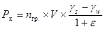
где: V - вместимость, м3, грунта (сыпучего материала) в утяжелителе, принимаемая по ТУ и рабочим чертежам.
(Измененная редакция, Изм. № 1).
4.14. Расчет трубопроводов на прочность, продольную устойчивость и деформативность производится без учета податливости грунта, находящегося между УБО или ПКБУ, принимая жесткопластическую модель. Величина предельной удерживающей способности грунта qпр.гр определяется по формулам (21) и (23), принимая gп = 1,0 и Кнв = 1,0. Углы наклона ветвей равны соответственно a = 90°, b = 0.
При засыпке трубопровода, забалластированного утяжелителями и ПКБУ с применением групповой установки, минеральным грунтом при расчете на прочность, продольную устойчивость и деформативность учитывается удерживающая способность грунта, расположенного над балластирующими устройствами.
Определение характеристик дисковых и стержневых вмораживаемых устройств
4.15. Определение характеристик не распространяется на дисковые и стержневые анкеры, находящиеся в грунте с засоленностью более 0,1 %, в мерзлых грунтах с льдистостью более 0,4 и биогенных грунтах.
4.16. Несущая способность дискового и стержневого вмораживаемого анкера определяется на основании испытания статической нагрузкой или расчетным путем по формуле
где gc - коэффициент условия работы, принимаемый равным 1,2;
i - номер диска;
n - число дисков;
Ri - расчетное давление на мерзлый грунт или грунтовый раствор, принимаемое равным как давление под концом сваи по СНиП 2.02.04-87 «Основания и фундаменты на вечномерзлых грунтах» в случае, если сжимаемая толща обеспечивает полную реализацию этого напряжения;
Ai - площадь диска (за исключением площади сечения стержня (тяги));
j - номер слоя;
m - число слоев.
По длине стержня (тяги), находящемся в мерзлом грунте, слои обязательно назначаются в месте изменения наименования грунта.
Величина Ri определяется в зависимости от грунта (грунтового раствора) и максимальной температуры на уровне верхи диска по табл. 7.
Температура грунта определяется на основании теплотехнического расчета для наиболее неблагоприятного режима и времени эксплуатации трубопровода.
Расстояние между дисками должно быть не менее 4D, а расстояние от верхнего диска до границы ореола оттаивания грунта - не менее 6D.
R - расчетное сопротивление мерзлого грунта или грунтовых растворов по поверхности смерзания со стержнем (тягой) каждого i-го слоя по температуре в середине этого слоя (принимается по СНиП 2.02.04-87 «Основания и фундаменты на вечномерзлых грунтах»). Значение R в зависимости от грунтов и грунтовых растворов приведено в табл. 8.
Примечание. При промежуточных значениях температуры, не указанных в табл. 8, значение R определяется линейной интерполяцией.
|
Расчетные сопротивления |
||||||||||||
|
-0,3 |
-0,5 |
-1 |
-1,5 |
-2 |
-2,5 |
-3 |
-3,5 |
-4 |
-6 |
-8 |
-10 |
|
|
Глинистые |
40 |
60 |
100 |
130 |
150 |
180 |
200 |
230 |
250 |
300 |
340 |
380 |
|
(0,4) |
(0,6) |
(1) |
(1,3) |
(1,5) |
(1,8) |
(2) |
(2,3) |
(2,5) |
(3) |
(3,4) |
(3,8) |
|
|
Песчаные |
50 |
30 |
130 |
160 |
200 |
230 |
260 |
290 |
330 |
380 |
440 |
500 |
|
(0,5) |
(0,3) |
(1,3) |
(1,6) |
(2) |
(2,3) |
(2,6) |
(2,9) |
(3,3) |
(3,8) |
(4,4) |
(5) |
|
|
Известково-песчаный раствор |
60 |
90 |
160 |
200 |
230 |
260 |
280 |
300 |
350 |
400 |
460 |
520 |
|
(0,6) |
(0,9) |
(1,6) |
(2) |
(2,3) |
(2,6) |
(2,8) |
(3) |
(3,5) |
(4) |
(4,6) |
(5,2) |
|
Примечание. Значения Raf для известкового песчаного раствора даны для раствора следующего состава: на 1 м3 раствора песка среднезернистого 820 л, известкового теста с объемным весом 1,4 г/см3 300 л, воды 230 л; осадка конуса 10 - 12 см. При других составах раствора, а также для цементно-песчаного раствора значения Raf определяются опытным путем.
Значение R при льдистости мерзлого грунта 0,2 0,4 следует дополнительно умножать на коэффициент 0,9.
Значение R следует умножать на коэффициент , зависящий от поверхности смерзания: для металлических поверхностей из горячекатаного проката gaf = 0,7; для арматуры периодического профиля gaf = 1,0.
A - площадь поверхности смерзания вечномерзлого грунта i-го слоя с боковой поверхностью тяги.
При расчете стержневых анкеров первое слагаемое в формуле (25) принимается равным нулю.
4.17. Несущая способность дискового вмораживаемого анкера определяется также из условия
где i и m - то же, что в формуле (25),
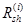
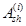
|
Расчетные сопротивления Rsh, КПа (кгс/см2) при температуре грунта, °С |
||||||||||||
|
-0,3 |
-0,5 |
-1 |
-1,5 |
-2 |
-2,5 |
-3 |
-3,5 |
-4 |
-6 |
-8 |
-10 |
|
|
Песчаные |
80 |
120 |
170 |
210 |
240 |
270 |
300 |
320 |
340 |
420 |
480 |
540 |
|
(0,8) |
(1,2) |
(1,7) |
(2,1) |
(2,4) |
(2,7) |
(3) |
(3,2) |
(3,4) |
(4,2) |
(4,8) |
(5,4) |
|
|
Глинистые |
50 |
80 |
120 |
150 |
170 |
190 |
210 |
230 |
250 |
300 |
340 |
380 |
|
(0,5) |
(0,8) |
(1,2) |
(1,5) |
(1,7) |
(1,9) |
(2,1) |
(2,3) |
(2,5) |
(3) |
(3,4) |
(3,8) |
|
Если раствор, заполняемый в скважину, отличается от естественного грунта, то вычисление по формуле (26) производится для двух случаев сдвига: по раствору при площади основания поверхности сдвига, равному площади диска, и по грунту при площади основания поверхности сдвига, равному площади сечения скважины (Примеры расчета даны в приложении).
4.18. Расчетная несущая способность анкерного устройства определяется по формуле
где z, ma и gk - определяются согласно п.4.7;
Fa - величина, равная минимальному значению, определенному по формулам (25) и (26).
4.19. Расчет трубопровода, закрепленного вмораживаемыми анкерами, на прочность, деформативноcть и устойчивость производится, как и при применении анкеров, устанавливаемых в талые грунты, с учетом податливости анкеров в грунте. Диаграмма работы анкерного устройства принимается для обоих случаев одинаковая. Параметры диаграммы вычисляются по тем же формулам (8 - 12), но величина Fu принимается как минимальное значение, вычисляемое по формулам (25) и (26) при gc = 1,5;
модуль деформации Eгр, и поперечного расширения грунта mгр, определяется для мерзлого грунта в зависимости от температуры грунта нa уровне i-го диска.
Разрешается при расчете трубопровода считать вмораживаемые анкеры, как неподвижные связи, т.е. с жесткостью, равной бесконечности, с ограниченной несущей способностью, определяемой величиной Fu.
4.20. При прокладке трубопровода на пучинистых грунтах, закрепленного вмораживаемыми и стержневыми анкерами, при режиме эксплуатации, вызывающем промерзание грунта под трубой, анкеры должны иметь ограничители усилий, величина срабатывания которого Рк и предельная суммарная величина хода ограничителя Dк должны быть равны:
где Fu вычисляется согласно п. 4.19;
Dпуч - расчетная суммарная величина перемещения грунта от пучения на уровне верхней образующей трубы. Для песчаных грунтов Dпуч определяется для первых трех лет эксплуатации, для глинистых грунтов - для семи лет.
5. ОРГАНИЗАЦИЯ И ТЕХНОЛОГИЯ ПРОИЗВОДСТВА РАБОТ
5.1. Организация и технология производства работ по балластировке и закреплению трубопроводов должны осуществляться в соответствии с требованиями СНиП III-42-80, проектов производства работ и технологических карт.
5.2. Балластировка трубопроводов (утяжелителями, грунтом и т.д.) производится после проведения изоляционно-укладочных работ. При производстве работ методом сплава балластировка трубопровода (обетонирование, кольцевые утяжелители) производится до укладки его в траншею.
5.3. Закрепление трубопроводов анкерными устройствами, как правило, осуществляется после укладки трубопровода в траншею. Допускается производить установку анкеров непосредственно после разработки траншеи, при этом необходимо выполнить мероприятия, обеспечивающие сохранность изоляционного покрытия трубопровода при его укладке в траншею.
5.4. Балластировка трубопроводов железобетонными утяжелителями, полимерно-контейнерными балластирующими устройствами (ПКБУ), как правило, должна производиться групповым методом.
5.5. Количество звеньев для балластировки и закрепления трубопроводов следует назначать в зависимости от темпа производства изоляционно-укладочных работ с целью обеспечения поточности строительства линейной части.
5.6. Приготовление закрепленного грунта для балластировки трубопроводов следует производить из привозного грунта или грунта из отвала траншеи. Уложенный в траншею закрепленный грунт над трубопроводом следует уплотнять машиной ДУ-12.
5.7. Заполнение полостей ПКБУ должно производиться разрыхленным грунтом, не должно допускаться попадание снега и льда в полость.
5.8. Балластировка трубопроводов грунтом с применением НСМ производится полотнищами длиной 10 - 15 м, приготовленными в стационарных условиях. Для создания оплошного ковра в продольном направлении над трубопроводом допускается перекрытие одного полотнища другим внахлест (не менее 0,5 м) без сваривания. При балластировке по схеме рис. 3, б края полотнища следует соединять сваркой или сшивать проволокой с шагом не менее 0,5 м.
Засыпка траншеи должна производиться одноковшовым экскаватором или траншеезасыпателем. Применять бульдозер следует только для окончательной засыпки траншеи и формирования валика.
5.9. Закрепление трубопровода винтовыми, раскрывающимися и вмораживаемыми анкерными устройствами должно осуществляться при нахождении его в траншее на проектных отметках.
5.10. Установку вмораживаемых анкеров в вечномерзлые грунты следует производить, как правило, в зимний период и календарные сроки, обеспечивающие смерзание анкеров с грунтом для получения расчетной удерживающей способности.
5.11. Погружение анкеров в вечномерзлые грунты следует производить буро-опускным и опускным способами. Отклонения положения анкеров от проектных не должны превышать -5 см по глубине и ±0,5 м вдоль трубопровода.
5.12. Буроопускной способ следует применять в твердомерзлых грунтах при средней температуре их по глубине погружения минус 0,5 °С и ниже.
5.13. Опускной способ целесообразно применять в грунтах песчаного и песчано-глинистого состава, содержащих не более 15 % крупнообломочных включений при средней температуре грунтов по глубине погружения минус 1,5 °С и ниже.
5.14. Диаметр разрабатываемой в вечномерзлых грунтах скважины должен превышать диаметр диска устанавливаемого в нее анкера не менее чем на 3 см при диаметре анкера до 200 мм и на 5 см при диаметре анкера свыше 200 мм. При этом пространство между стенками скважин и анкером должно быть заполнено грунтовым (песчаным) раствором, состав и консистенция которого подбирается в соответствии с указаниями СНиП 3.03.01-83.
5.15. Для погружения анкеров опускным способом с парооттаиванием грунта следует применять передвижной паровой котел с рабочим давлением 1,0 МПа типа Д-563, резинотканые паропроводные шланги на давление 1,5 - 2,0 МПа по ГОСТ 18698-73 и комплект паровых игл, изготовляемых из стальных труб диаметром 25 - 30 мм.
Производительность паровых котлов следует выбирать по целесообразному количеству одновременно работающих паровых игл, исходя из расчетного расхода пара 15 - 20 кг/ч на одну работающую иглу.
6. КОНТРОЛЬ КАЧЕСТВА ПРОИЗВОДСТВА РАБОТ ПО БАЛЛАСТИРОВКЕ И ЗАКРЕПЛЕНИЮ ТРУБОПРОВОДОВ
6.1. При производстве и приемке работ по балластировке и закреплению трубопроводов должны выполняться требования проекта, СНиП 2.05.06-85 «Магистральные трубопроводы» и СНиП III-42-80 «Правила производства и приемки работ. Магистральные трубопроводы».
6.2. При производстве и приемке работ по балластировке и закреплению трубопроводов осуществляется входной, операционный и приемочный контроль.
6.2.1. Входному контролю подвергаются материалы, средства и устройства для балластировки и закрепления трубопроводов, которые должны иметь технический паспорт (сертификаты).
6.2.2. Импортные материалы, средства и устройства проверяют по показателям, оговоренным в контракте.
6.2.3. Материалы, средства и устройства, не соответствующие требованиям проекта, должны быть отбракованы в установленном порядке.
6.3. Операционный контроль качества производства работ по балластировке и закреплению трубопровода должен производиться в соответствии с технологическими картами, утвержденными в установленном порядке. Контроль удерживающей способности винтовых анкеров должен производиться за счет подтягивания каждого анкера краном-трубоукладчиком с фиксацией величины расчетной удерживающей способности анкера по динамометру.
(Новая редакция, Изм. № 1).
6.4. Приемочный контроль качества балластировки и закрепления трубопроводов производится с целью проверки соответствия выполненных работ проекту. Проверяется правильность:
количества установленных утяжелителей и анкерных устройств;
расстояния между утяжелителями, анкерными устройствами;
длины перемычек из закрепленного грунта;
длины участков балластировки грунтом с применением НСМ;
несущей способности анкеров (по ГОСТ 5686-78 проверяется несущая способность анкеров в количестве 2 % от числа установленных на участке трубопровода, но не менее 3 шт.).
6.5. Соответствие выполненных работ рабочему проекту должно быть оформлено актом приемки работ, подписанным представителями заказчика и подрядчика (см. «Строительство магистральных и промысловых трубопроводов. Контроль качества и приемки работ. Часть II» ВСН 012-88/Миннефтегазстрой).
7. ТЕХНИКА БЕЗОПАСНОСТИ
7.1. При производстве работ по балластировке и закреплению трубопроводов железобетонными утяжелителями, анкерными устройствами, утяжелителями ПКБУ и грунтом с применением полимерных материалов следует руководствоваться правилами техники безопасности, изложенными в следующих документах:
СНиП III-4-80 «Техника безопасности в строительстве». - М.; Стройиздат, 1980;
«Правилах техники безопасности при строительстве магистральных стальных трубопроводов». - М.: Недра, 1982;
«Правилах устройства и безопасной эксплуатации грузоподъемных кранов». - М.: Металлургия, 1981, а также инструктивных и нормативных материалах по технике безопасности в Миннефтегазстрое;
«Единых правилах безопасности при геолого-разведочных работах», Госгортехнадзор СССР. - М.: Недра, 1979;
«Правилах технической эксплуатации электроустановок потребителей и правилах техники безопасности при эксплуатации электроустановок потребителей», ПТЭ и ПТБ. - М.: Энергоатомиздат, 1986;
ГОСТ 12.2.012-75. ССТБ «Приспособления по обеспечению безопасного производства работ. Общие требования»;
ГОСТ 12.3.003-75. ССТБ «Работы электросварочные. Общие требования безопасности».
7.2. Строительно-монтажные работы запрещается выполнять без утвержденного в установленном порядке проекта производства работ. Проект производства работ должен содержать раздел «Требования безопасности», в котором должен быть предусмотрен комплекс организационных и технических мероприятий, выполнение которых обеспечивает безопасность проведения работ по балластировке и закреплению трубопроводов.
7.3. К выполнению работ по балластировке и закреплению трубопроводов могут быть допущены рабочие:
прошедшие предварительный и периодический медицинские осмотры в сроки, установленные Минздравом СССР;
достигшие возраста 18 лет, обученные безопасным методам труда и приемам ведения работ, прошедшие экзаменационную проверку знаний, методов и приемов исполнения работ, документально оформленную, с выдачей удостоверения;
прошедшие инструктаж по технике безопасности непосредственно на рабочем месте по инструкции, утвержденной главным инженером строительной организации;
обеспеченные спецодеждой, спецобувью и защитными приспособлениями в соответствии с Типовыми нормами.
7.4. На месте производства работ необходимо иметь стапливаемый вагон-домик для обогрева, переодевания и приема пищи.
7.5. Освещенность при работе в темное время суток рабочих мест, проездов и проходов к ним не должна быть менее 25 лк.
7.6. В зоне работ по балластировке и закреплению трубопроводов не допускается присутствие посторонних лиц.
7.7. Перед началом работ необходимо убедиться в исправности узлов и механизмов, особенно шлангов высокого давления гидравлических систем, целостности изоляционного покрытия электрических проводов.
7.8. Грузозахватные приспособления для подъема грузов должны исключать их самопроизвольное отцепление и обеспечивать устойчивость их положения во время подъема и перемещения. Места строповки должны быть отмечены заранее.
7.9. Стальные канаты и стропы должны отвечать действующим государственным стандартам и иметь сертификаты (свидетельства) или копия сертификата завода-изготовителя об их испытании. Канаты, не снабженные указанным свидетельством, не должны быть использованы.
7.10. Места перехода людей через траншею должны быть оборудованы переходными мостиками, освещенными в темное время суток. Для спуска и подъема из нее следует применять переносные лестницы.
7.11. При развозке железобетонных утяжелителей на стреле крана-трубоукладчика и навешивания его на трубопровод запрещено:
поднимать утяжелители выше 1 м над поверхностью земли;
поднимать груз без проверки правильности строповки и надежности действия тормоза крановой лебедки;
находиться под грузом или в зоне падения стрелы крана-трубоукладчика.
7.12. Не допускается выполнять монтажные работы при гололедице, грозе, снегопаде и тумане, исключающими хорошую видимость в пределах фронта работ (при освещенности ниже 25 лк).
7.13. При балластировке трубопроводов грунтом с применением полимерных материалов перед укладкой полотнищ на трубу необходимо проверить состояние стенок и бровок траншеи. В случае необходимости принять меры по их укреплению.
7.14. Работы по свариванию полимерных полотнищ должны производиться в помещениях с принудительной вентиляцией.
7.15. Погрузка рулонов или других заготовок массой более 50 кг должна производиться механизированным способом.
ПРИЛОЖЕНИЕ
Рекомендуемое
ПРИМЕРЫ РАСЧЕТА НЕСУЩЕЙ СПОСОБНОСТИ ВМОРАЖИВАЕМЫХ АНКЕРОВ
Расчет несущей способности вмораживаемого анкера.
Исходные данные: Анкер двухдисковый, диаметр дисков 120 мм, расстояния между дисками 500 мм, диаметр скважины 150 мм, тяга стальная периодического профиля диаметром 28 мм. Анкер устанавливается буроопускным способом. Для заполнения скважины используется песчаный раствор (пылеватый песок). Длина взаимодействия анкера с вечномерзлым грунтом, температура грунта показаны на рисунке приложения. Льдистость грунта менее 0,2.
Плавучесть трубопровода диаметром 1420 мм принимается равной 1050 кгс/м; суммарная расчетная нагрузка, действующая на трубопровод вверх, при проверке общей устойчивости трубопровода в продольном направлении в плоскости наименьшей жесткости системы принимается равной 1350 кгс/м.
1. Определяем площадь дисков:
А1 = А2 = = 0,25p × (1202 - 282) = 107 см2.
2. По температуре и наименованию грунта определяем расчетные давления на диски Ri (по табл. 7 для глубины погружения диска, равной 10 м). Температура t1 на уровне нижнего диска равна минус 2,1 °С, t2 на уровне верхнего -2 °С. Тогда R1 = 20,2 кгс/см2; R2 = 20 кгс/cм2.
3. Для температуры грунта в середине слоя (tср = 1,6 °С) по табл. 8 для песчаных грунтов находим расчетное сопротивление Raf смерзанию грунта с поверхностью тяги. Оно составляет (методом интерполяции между двумя значениями температур минус 1,5 °С и 2 °С) Raf = 1,68 кгс/см2.
4. Определяем площадь поверхности смерзания тяги
Aaf = П × dт × 200 = 1760 см2
Схема к расчету двухдискового анкера:
а - схема анкера; б - расчетная температура грунта; в - геологический разрез участка.
5. Определяем несущую способность анкера по формуле (25):
исходя из устойчивости трубопровода против всплытия
Fd = 1,2 × (20,2 × 107 + 20,0 × 107 + 1,68 × 1760) = 8710 кгс;
исходя из общей устойчивости трубопровода
Fu = 1,5 × (20,2 × 107 + 20,0 × 107 + 1,68 × 1760) = 10887 кгс.
6. Определяем несущую способность анкера по формуле (26):
Fd = Rsh × Ash,
Rsh определяется по табл. 9 для температуры минус 1,6 °С в середине слоя и равна 2,16 кгс/см2;
Ash - площадь сдвига по боковой поверхности цилиндра c основанием, равным площади диска:
Ash = П × d × 200 = 3,14 × 12 × 200 = 7536 см2;
Fd = 2,16 × 7536 = 16277 кгс.
(Если скважина разработана в глинистом грунте, но засыпана песчаным раствором, то расчет несущей способности по формуле (26) производится и для случая сдвига по боковой поверхности скважины, т.е.
Fd = 1,54 × 3,14 × 15 × 200 = 14496 кгс).
Несущая способность анкера принимается меньшей из вычисленных по формулам (25) и (26), т.е. Fd = 8710 кгс.
7. Определяем несущую способность анкерного устройства по формуле (27):
исходя из устойчивости трубопровода против всплытия
Вd = = 13936 кгс;
исходя из общей устойчивости трубопровода
Bu = = 17420 кгс.
8. Определяем расстояния между анкерными устройствами (для трубопровода диаметром 1420 мм):
исходя из устойчивости трубопровода против всплытия
l = = 13,3 м;
исходя из общей устойчивости трубопровода
l1 = = 12,9м.
Принимается меньшее значение l1 = 12,9 м.
Все исходные данные принимаются такими же, как и в примере № 1, за исключением следующих данных: анкер устанавливается опускным способом (парооттаиванием) в суглинок, льдистость грунта находится в пределах 0,2 £ i £ 0,4, температура на уровне нижнего диска минус 4,0 °С, на уровне верхнего - минус 3,8 °С. Температура в середине слоя минус 2 °С.
1. Определяем несущую способность анкера по формуле (25):
исходя из устойчивости трубопровода против всплытия
Fd = 1,2 × (12,5 × 107 + 11,7 × 107 + 1,5 × 1760) = 1,2 × (1337,5 + 1251,9 + 2640) = 6275 кгс;
исходя из общей устойчивости трубопровода
Fu = 1,5 × (12,5 × 107 + 11,7 × 107 + 1,5 × 1760) = 7844 кгс.
2. Определяем несущую способность анкера по формуле (26):
Fd = 1,7 × 7536 = 12811 кгс.
Принимается меньшее значение несущей способности анкера, т.е. 6275 кгс.
3. Определяем несущую способность анкерного устройства:
исходя из устойчивости трубопровода против всплытия
Bd = = 10400 кгс;
исходя из общей устойчивости трубопровода
Bu = = 12550 кгс.
4. Определяем расстояния между анкерными устройствами (для трубопровода диаметром 1420 мм):
исходя из устойчивости трубопровода против всплытия
l = = 9,9 м;
исходя из общей устойчивости трубопровода
l1 = = 9,3 м.
Принимается меньшее значение l1 = 9,3 м.
СОДЕРЖАНИЕ